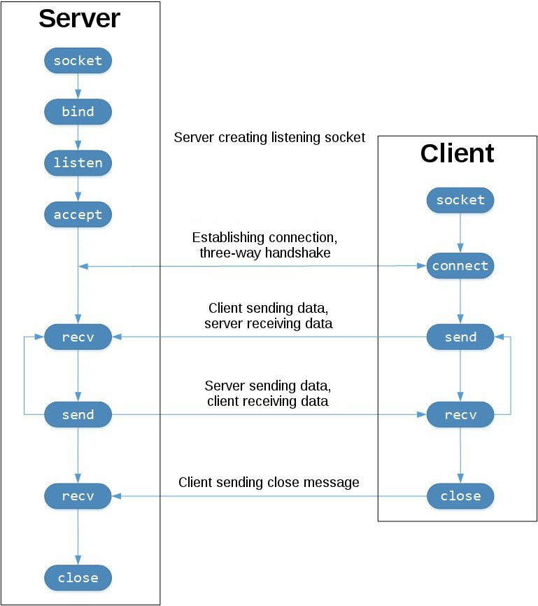

Práctica 1 (Apéndice). Programación con sockets en Python
Objetivos
- Familiarizarse con la API de sockets en Python.
- Desarrollar esquemas básicos de sistemas cliente/servidor TCP y UDP utilizando Python.
- Ser capaces de analizar el tráfico generado en una conexión TCP y UDP a través de Wireshark.
- Diseñar un protocolo de capa de aplicación para simular una aplicación cliente/servidor utilizando TCP y UDP.
- Observar la diferencia en tráfico generado para una misma aplicación utilizando TCP y UDP.
- Implementar servidores multi-hilo en Python.
Nota
Ofrecemos esta práctica como anexo y referencia para complementar los contenidos ofrecidos en la Práctica 1. Su comprensión y desarrollo es opcional, aunque puede ser de utilidad para alumnos con poca experiencia en el lenguaje C o en programación con sockets, o para prototipar rápidamente sistemas cliente/servidor utilizando Python.
La API de sockets en Python
El módulo socket de Python proporciona una interfaz completa para trabajar con la API de sockets de Berkeley. En la presente práctica, trabajaremos exclusivamente con esta API para desarrollar aplicaciones cliente/servidor utilizando los protocolos TCP y UDP.
Las funciones y métodos principales de la API de sockets son:
socket()-bind()-listen()-accept()-connect()-connect_ex()-send()-recv()-close()-
Python prorpociona una API consistente y completa mapeada directamente a las anteriores llamadas al sistema, típicamente escritas en lenguaje C. Como parte de su biblioteca estándar, Python también proporciona clases que facilitan el trabajo con las funciones de bajo nivel. Aunque no lo cubriremos, el módulo socketserver proporciona una forma sencilla de crear servidores de red. Existen también numerosos módulos disponibles para implementar protocolos de alto nivel (por ejemplo HTTP o SMTP), véase .
Sockets TCP
En Python, los sockets TCP se crean en Python utilizando socket.socket(),
especificando el tipo de socket como socket.SOCK_STREAM. El protocolo
de control de transmisión (TCP) se caracteriza por dos rasgos principales:
-
Es confiable: se implementan mecanismos de detección de pérdidas en la red y reenvío de paquetes perdidos.
-
Garantiza una entrega de paquetes en orden: los datos se entregan a las capas superiores (aplicaciones) en el mismo orden en el que fueron enviados.
En contra, los sockets UDP se crean a través de socket.SOCK_DGRAM, y no
son confiables ni garantizan la entrega de paquetes en orden. Por tanto, es
el desarrollador de aplicaciones quien, en caso de así desearlo en el diseño
de la aplicación, debe implementar estos mecanismos de forma específica.
En el siguiente diagrama se muestra la secuencia típica de invocaciones a la API de sockets para TCP:

En la figura, la columna de la izquierda representa al servidor, mientras que la columna de la derecha representa al cliente en la conexión TCP. Observa las invocaciones necesarias para configurar un socket a la escucha de conexiones entrantes:
socket()bind()listen()accept()
En este extremo, un socket escucha (listen) potenciales conexiones entrantes desde clientes. Cuando un cliente solicita conectar, el servidor acepta (accept) la conexión, completándola.
El cliente invoca a connect() para establecer una conexión con el servidor
e inicia el proceso de conexión a tres vías (three-way connection).
Una vez establecida la conexión, los datos se intercambian entre cliente y
servidor a través de invocaciones a send() y recv().
Finalmente, el socket se destruye (esto es, la conexión entre ambos extremos
se cierra) a través de una invocación a close() en cada extremo.
Cliente/servidor echo TCP
Veamos un ejemplo sencillo para crear un par cliente-servidor. En este caso, el servidor simplemente responderá con la misma cadena que reciba desde el cliente.
Servidor echo
#!/usr/bin/env python3
#### servidor_echo.py
import socket
HOST = '127.0.0.1' # Interfaz estándar de loopback (localhost)
PORT = 65432 # Puerto de escucha (los puertos mayores a 1023 son no privilegiados)
with socket.socket(socket.AF_INET, socket.SOCK_STREAM) as s:
s.bind((HOST, PORT))
s.listen()
conn, addr = s.accept()
with conn:
print('Conectado ', addr)
while True:
data = conn.recv(1024)
if not data:
break
conn.sendall(data)
Nota
De momento, no importa si no entiendes todas las líneas en el anterior
código. Simplemente se trata de un punto de partida para desarrollar un
servidor sencillo. Sin embargo, es conveniente que copies el código en
un fichero de texto (por ejemplo, llamado servidor_echo.py) para que
podeamos probarlo.
Veamos línea a línea las partes más importantes del anterior código.
socket.socket() crea un objeto socket. Observa que, al crearse a través
de una construcción with, no es necesario invocar explícitamente a
s.close(), aunque debes tener en cuenta que el objeto es destruido al
finalizar la construcción:
with socket.socket(socket.AF_INET, socket.SOCK_STREAM) as s:
pass # Es posible usar el socket win invocar a s.close().
Los argumentos que se proporcionan a socket() especifican la familia de
direcciones (AF_INET) y tipo de socket (SOCK_STREAM).
AF_INET es la familia de direcciones de Internet para IPv4.
SOCK_STREAM es el tipo de socket que permite la creación de conexiones
TCP.
bind() se utiliza para asociar el socket a una interfaz de red y número de
puerto específicos:
HOST = '127.0.0.1' # Interfaz estándar de loopback (localhost)
PORT = 65432 # Puerto de escucha (los puertos mayores a 1023 son no privilegiados)
# ...
s.bind((HOST, PORT))
Los valores proporcionados a bind() dependen de la familia de direcciones
seleccionada para el socket. En este ejemplo, al utilizar AF_INET,
espera una tupla con únicamente dos valores (host, puerto).
Para determinar el host, es posible utilizar un nombre de host, una dirección IP o una cadena vacía. Si utilizamos una dirección IP, ésta debe ser especificarse mediante una cadena que contenga una dirección IPv4 bien formada. La dirección 127.0.0.1 es la dirección IPv4 estándar para la interfaz de loopback, por lo que únicamente procesos que estén ejecutándose en el propio host podrán comunicar con el servidor. Si proporcionamos una cadena vacía, el servidro aceptará conexiones entrantes a través de todas las interfaces IPv4 disponibles en el sistema.
El número de puerto (port) se especifica con un valor entero entre 1 y 65535, y espcifica el puerto (en este caso, TCP) a través del cual el servidor aceptará conexiones desde los clientes. La mayoría de sistemas requieren permisos de superusuario para escuchar a través de los puertos (well-known), es decir, con valor inferior a 1024.
Continuando con el ejemplo, listen() posibilita que un servidor pueda, en el
futuro, aceptar (accept()) conexiones entrantes. En otras palabras, pone a
la escucha al socket:
s.listen()
conn, addr = s.accept()
La invocación a accept() bloquea el proceso y espera a una conexión
entrante. Cuando un cliente conecta, devuelve un objeto socket que representa
la conexión, así como una tupla (addr) que contiene la dirección del cliente.
Concretamente, esta tupla contiene los valores (host, port) que almacenan
la dirección IPv4 y puerto del cliente que solicita la conexión.
Observa que, en el ejemplo, conn es el objeto socket que usaremos para
comunicar con el cliente:
conn, addr = s.accept()
with conn:
print('Conectado ', addr)
while True:
data = conn.recv(1024)
if not data:
break
conn.sendall(data)
Tras obtener el objeto devuelto por accept(), diseñamos el servidor como un
bucle infinito que invoca repetidamente a llamadas bloqueantes a
conn.recv(). Así, leemos los datos enviados por el cliente y los reenviamos
sin modificación utilizando conn.sendall().
Si conn.recv() devuelve un objeto de tipo bytes vacío (b'') significa
que el cliente cerró la conexión, en cuyo caso el bucle termina, destruyéndose
el socket al salir de la sentencia with.
Cliente echo
Veamos a continuación la estructura general del cliente (puedes usar, por
ejemplo, cliente_echo.py como nombre para el fichero):
#!/usr/bin/env python3
### cliente_echo.py
import socket
HOST = '127.0.0.1' # IP del servidor
PORT = 65432 # Puerto de escucha del servidor
with socket.socket(socket.AF_INET, socket.SOCK_STREAM) as s:
s.connect((HOST, PORT))
s.sendall(b'Hola, mundo')
data = s.recv(1024)
print('Recibido ', repr(data))
En comparación con el servidor, la estructura del cliente es más simple;
simplemente crea un nuevo objeto socket, conecta con el servidor e invoca
a s.sendall() para enviar el mensaje. Finalmente, espera la recepción de
la respuesta utilizando s.recv() y la imprime por pantalla.
Ejecución del cliente y servidor echo
A continuación, ejecutaremos cliente y servidor para observar el estado de las conexiones durante su ciclo de vida.
Ejecuta en una terminal el servidor:
$ python3 ./servidor_echo.py
Como ves, la terminal se bloquea (de hecho, el servidor permanece en estado bloqueado) en la invocación:
conn, addr = s.accept()
Realmente, el servidor está esperando a que haya conexiones entrantes por parte de un cliente. Abre otra terminal y ejecuta el cliente:
$ python3 cliente_echo.py
Recibido 'Hola, mundo'
En la ventana del servidor, deberías ver algo similar a:
$ python3 ./servidor_echo.py
Conectado ('127.0.0.1, 61234')
En esta salida, el servidor ha mostrado por pantalla la tupla devuelta por
s.accept(), que incluye la dirección IP y el número de puerto TCP. Dicho
número de puerto (en el ejemplo anterior, 61234) es seleccionado aleatoriamente
por el sistema operativo y puede variar en tu ejecución.
Herramientas para observar el estado del socket
Podemos utilizar la herramienta netstat para observar el estado actual de
los sockets en cualquier sistema operativo (macOS, Linux e incluso Windows). Por
ejemplo, esta sería la salida de netstat en Linux tras ejecutar el servidor:
netstat -an | grep 65432
Conexiones activas de Internet (servidores y establecidos)
Proto Recib Enviad Dirección local Dirección remota Estado
tcp 0 0 127.0.0.1:65432 0.0.0.0:* ESCUCHAR
Observa que hemos filtrado la salida de la orden netcat según el número de
puerto utilizado. Observa el valor de las columnas Proto, Dirección local y
Estado.
Nota
Otra forma de observar el estado de las conexiones es a través de la orden
lsof -i -n. Ejecútala y observa su salida.
Capturas de tráfico vía Wireshark
Wireshark es una herramienta de código abierto ampliamente utilizada para analizar protocolos de comunicación de red en cualquiera de las capas de la pila TCP/IP (como también en otros protocolos). Wireshark implementa un amplio abanico de filtros para definir criterios de búsqueda en las capturas de tráfico, aunque de momento, en nuestro caso, no será necesario utilizar filtros específicos.
Para arrancar Wireshark en la máquina virtual proporcionada (o en cualquier instalación básica Linux), teclea en tu terminal:
$ sudo wireshark
Tras el arranque, podemos comenzar una nueva captura de tráfico a través
del menú Capture, opción Start. La pantalla de selección de interfaz
nos permitirá definir en qué interfaz de red se realizará la captura. En
nuestro caso, ya que vamos a comunicar dos procesos en la misma máquina,
elegiremos la interfaz de Loopback (lo) y comenzaremos la captura.
Tarea
Arranca Wireshark y prepara una captura sobre la interfaz de loopback. Ejecuta el servidor echo TCP y el cliente correspondiente, y analiza el tráfico generado. Especialmente, fíjate en el proceso de establecimiento de conexión en tres vías, paquetes de Acknowledge tras el envío de cada mensaje y, en general, en cualquier otro aspecto que consideres de interés.
Sockets UDP
La creación y gestión de sockets UDP en Python resulta todavía más sencilla. Observa el siguiente código, que crea un servidor UDP utilizando la API de sockets Python:
import socket
udp_socket = socket.socket(socket.AF_INET, socket.SOCK_DGRAM)
udp_socket.bind(("localhost", 5005))
data = udp_socket.recv(512)
print(data)
Primero, importamos la biblioteca socket de recepción, igual
que en el caso de TCP. Obviamente, en este caso el tipo de socket pasa a ser
socket.DOCK_DGRAM, para indicar que deseamos utilizar UDP en la comunicación.
El programa espera a la recepción de un paquete utilizando el método bloqueante
recv, cuyo único parámetro indica el número máximo de bytes que deseamos
recibir. Cuando un paquete llega al socket, el metodo recv devolverá un
array de bytes, que será almacenado en la variable que deseemos.
El envío de datos a través de un socket UDP es también sencillo:
import socket
udp_socket = socket.socket(socket.AF_INET, socket.SOCK_DGRAM)
udp_socket.bind(("localhost", 0))
data = b"Hola, mundo!"
udp_socket.sendto(data,("localhost", 5005))
Observa que, en este caso, asociamos (bind) el socket a un puerto especificado como 0. Este valor especial indica al sistema operativo que elija para la transimisión un puerto origen aleatorio de entre los disponibles en el sistema.
A continuación, creamos los datos a enviar y los enviamos utilizando el método
sendto(). Este método tomados argumentos: datos a enviar, y precisamente la
dirección de envío. Los datos enviados a través del socket deben formar parte
de un array de bytes (por ello, la cadena a enviar viene precedida por el
carácter b).
Tarea
Comprueba que, efectivamente, los códigos de envío y recepción a través de UDP funcionan como se espera.
Nota
Desde la versión 3 de Python, las cadenas se codifican utilizando Unicode. Al contrario que ASCII, conde cada caracter tiene una representación en byte directa, Unicode utiliza enteros par representar cada caracter, que deben ser codificados para obtener una representación en forma de byte. Uno de esos esquemas de codificación es UTF-8. Por ejemplo, el siguiente código muestra cómo codificar una cadena Unicode en una representación de bytes:
cadena= "Hola"
data = cadena.encode("UTF-8")
print(data, type(data))
lo cual genera
b"Hola" <class 'bytes'>
que puede ya ser enviado directamente por red.
Hasta este punto, los programas UDP han sido totalmente unidireccionales en el envío/recepción de datos, pero obviamente, un socket UDP es un canal de comunicación bidireccional.
Tarea
Implementa una funcionalidad similar al servidor echo que vimos para TCP, pero utilizando en este caso UDP. Realiza una captura de tráfico en Wireshark similar a la realizada en el caso de TCP, y observa las principales diferencias entre ellas a nivel de tráfico generado.
Envío de datos binarios a través de sockets
Hasta este punto, hemos visto únicamente cómo enviar cadenas de texto a través
de sockets TCP o UDP, pero es muy probable que sea necesario (o conveniente),
en ocasiones, enviar datos directamente en formato binario (por ejemplo,
valores numéricos en punto flotante o enteros). Utilizando el módulo
struct de Python podemos especificar qué tipo o tipos de datos se almacenan
en una secuencia de bytes y cómo decodificarlos. También es posible especificar
en qué lugar de la secuencia se alojan dichos datos, permitiendo el empaquetado
de múltiples datos de distintos tipos de forma sencilla, y su posterior
decodificación en el otro extremo de la comunicación.
Nota
Para todos los detalles del módulo struct, consulta la página oficial de
documentación.
El módulo struct proporciona dos métodos de interés: pack y unpack.
La siguiente sentencia:
struct.pack(">iii", 1, 2, 3)
utiliza el método pack para realizar un empaquetado de datos. Concretamente,
observa como el método recibe dos parámetros:
-
En primer lugar, el parámetro de formato ">iii". Define como debe codificarse cada valor en la secuencia de bytes. El primer carácter indica el endianness utilizado, en este caso big endian (utilizaríamos ">" para big endian, "<" para little endian y "=" para network (big) endian).
-
En segundo lugar, los valores a empaquetar.
Observa que el formato, además, incluye el número y tipo de los datos a empaquetar (en este caso, tres valores detipo entero). Para otros tipos de datos, consulta la documentación del módulo.
Desempaquetar los datos enviados en el extremo opuesto es intuitivo:
a, b, c = struct.unpack( ">iii" )
A continuación, mostramos un ejemplo de sistema cliente/servidor TCP que hace
uso del módulo struct para realizar el envío de dos datos enteros y uno
flotante entre un cliente y un servidor.
# Cliente
import binascii
import socket
import struct
import sys
# Socket TCP
sock = socket.socket(socket.AF_INET, socket.SOCK_STREAM)
server_address = ('localhost', 10001)
sock.connect(server_address)
packed_data = struct.pack("=iif", 1, 4, 2.7)
try:
# Envio de datos
print('Enviando "%s"' % binascii.hexlify(packed_data))
sock.sendall(packed_data)
finally:
print('Cerrando socket')
sock.close()
# Servidor
import binascii
import socket
import struct
import sys
# Socket TCP
sock = socket.socket(socket.AF_INET, socket.SOCK_STREAM)
server_address = ('localhost', 10001)
sock.bind(server_address)
sock.listen(1)
while True:
print('Esperando conexiones entrantes')
connection, client_address = sock.accept()
try:
data = connection.recv(1024)
print('Recibido "%s"' % binascii.hexlify(data))
unpacked_data = struct.unpack("=iif", data)
print('Desempaquetado:', unpacked_data)
finally:
connection.close()
Tarea
Ejecuta el anterior sistema cliente servidor y analiza el tráfico generado, en busca de los datos binarios empaquetados. Experimenta con otros tipos de datos y endianess y observa las diferencias.
Tarea
Tarea
Se pide diseñar un sistema cliente/servidor programado en Python, que simule el envío de un conjunto de datos sensorizados desde un cliente hacia un servidor. El protocolo a utilizar (formato de datos enviado por la red a nivel de aplicación) debe ser propuesto por el propio alumno y descrito previamente al desarrollo. Se valorará el uso de múltiples tipos de datos tanto en el envío de datos sensorizados como de posibles respuestas por parte del servidor. Se desarrollará una versión utilizando TCP y otra equivalente usando UDP. El cliente enviará los datos de forma periódica y se éstos generarán de modo aleatorio.
A modo de entrega, se solicitan los códigos desarrollados, así como un análisis del tráfico generado, considerando la sobrecarga (en bytes reales enviados) introducida por cada protocolo de capa de transporte.
Ejemplo de sistema cliente/servidor multi-hilo
Los ejemplos anteriormente descritos, aunque funcionales, adolecen en su diseño de una característica esencial: el servidor deja de atender peticiones entrantes mientras trata cada nuevo envío por parte del cliente. Los siguientes ejemplos muestran implementaciones sencillas con soporte multi-hilo para un sistema cliente/servidor escrito en Python.
# Servidor TCP concurrente
import socket, threading
class ClientThread(threading.Thread):
def __init__(self,clientAddress,clientsocket):
threading.Thread.__init__(self)
self.csocket = clientsocket
print ("Nueva conexion anyadida: ", clientAddress)
def run(self):
print ("Conexion desde: ", clientAddress)
#self.csocket.send(bytes("Hi, This is from Server..",'utf-8'))
msg = ''
while True:
data = self.csocket.recv(2048)
msg = data.decode()
if msg=='bye':
break
print ("Desde el cliente", msg)
self.csocket.send(bytes(msg,'UTF-8'))
print ("Cliente ", clientAddress , " desconectado...")
LOCALHOST = "127.0.0.1"
PORT = 8080
server = socket.socket(socket.AF_INET, socket.SOCK_STREAM)
server.setsockopt(socket.SOL_SOCKET, socket.SO_REUSEADDR, 1)
server.bind((LOCALHOST, PORT))
print("Servidor arrancado...")
print("Esperando petición de clientes...")
server.listen(1)
while True:
clientsock, clientAddress = server.accept()
newthread = ClientThread(clientAddress, clientsock)
newthread.start()
# Cliente TCP. El envío de la cadena bye indica petición de desconexión.
import socket
SERVER = "127.0.0.1"
PORT = 8080
client = socket.socket(socket.AF_INET, socket.SOCK_STREAM)
client.connect((SERVER, PORT))
client.sendall(bytes("Hola, soy un cliente!!",'UTF-8'))
while True:
in_data = client.recv(1024)
print("Desde el servidor :" ,in_data.decode())
out_data = input()
client.sendall(bytes(out_data,'UTF-8'))
if out_data=='end':
break
client.close()
Tarea
Estudia el código del servidor concurrente y observa cómo gestiona la creación de hilos para atender cada petición entrante. Conecta simultáneamente múltiples clientes y observa el estado de los sockets mediante las herramientas correspondientes.
Tarea opcional
Tarea opcional
Modifica tu primer entregable para considerar una implementación multihilo del servidor TCP, siguiendo las directrices de los códigos de ejemplo anteriormente proporcionados.
Tarea opcional
Tarea opcional
Modifica el protocolo de envío para que tu aplicación cliente/servidor UDP garantice en la medida de lo posible la recepción de los paquetes enviados desde el cliente, así como su recepción en orden. Vuelve a analizar el tráfico necesario en este caso comparado con una comunicación básica basada en TCP (donde sí se garantizan, a nivel de transporte, dichas características).